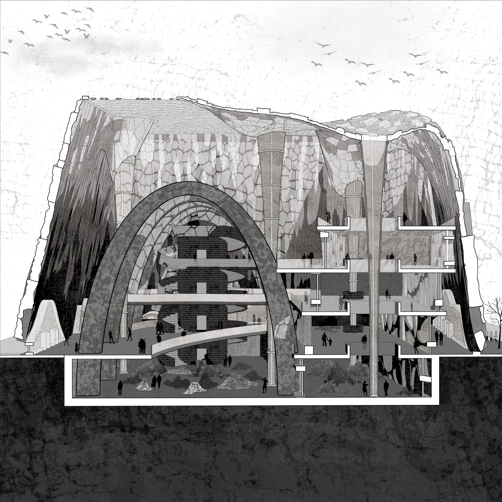
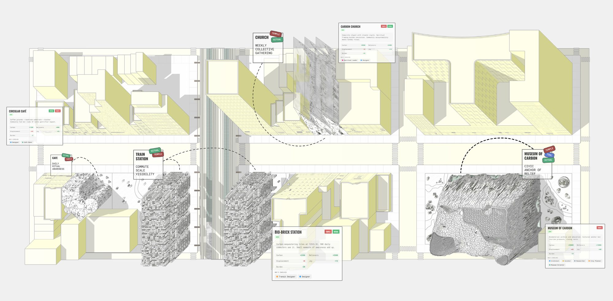
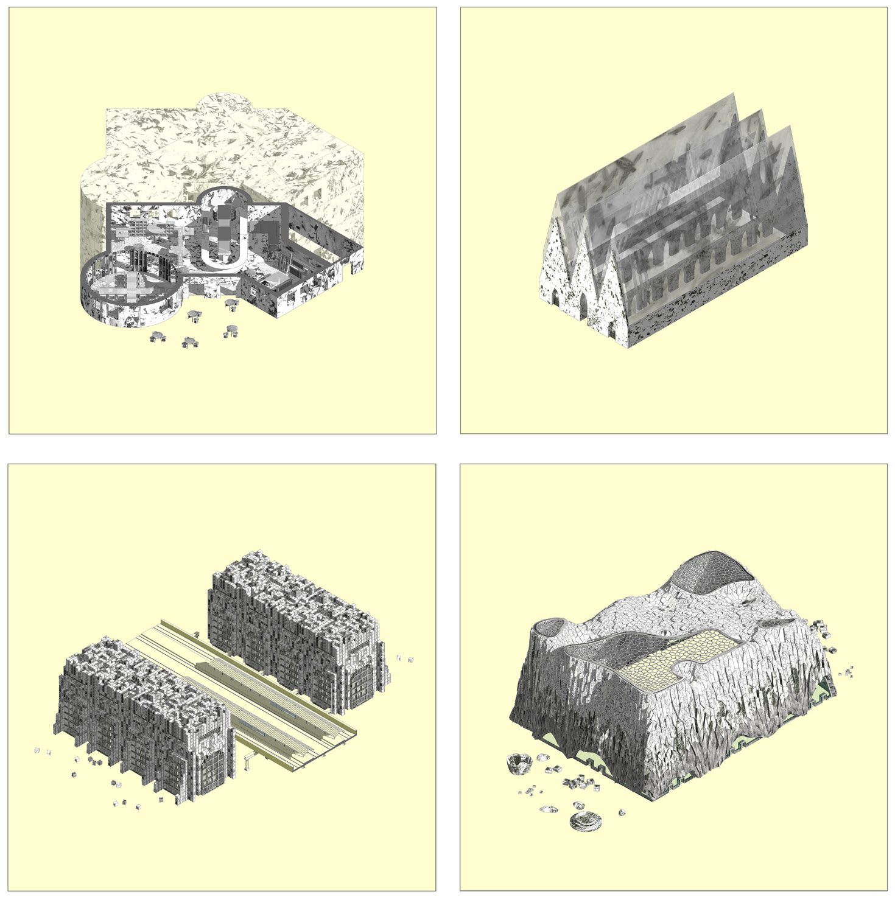
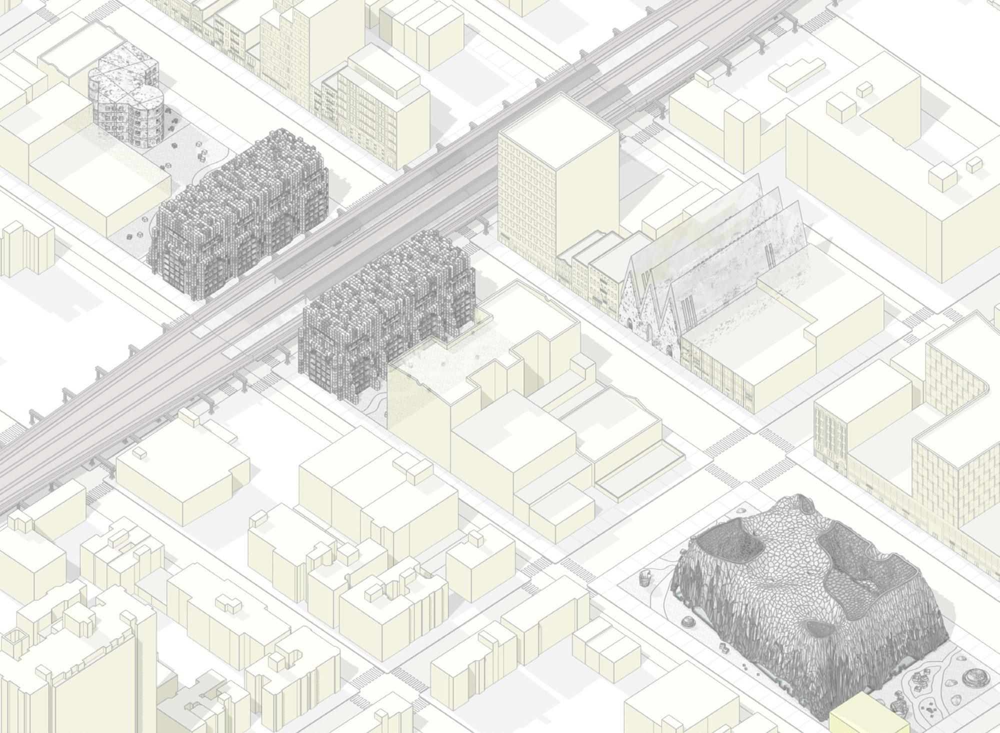
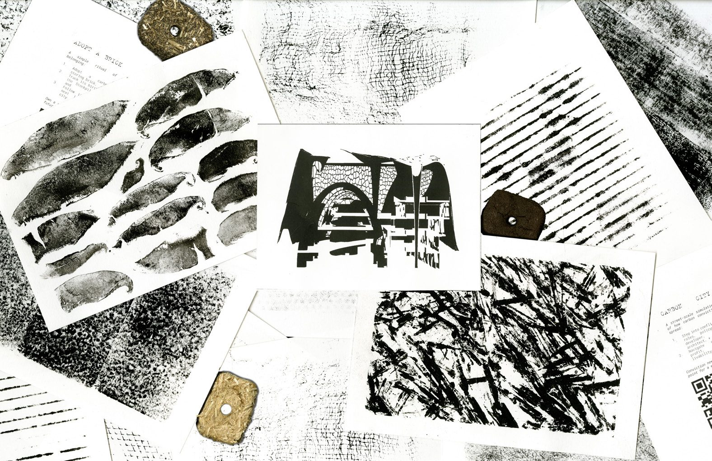
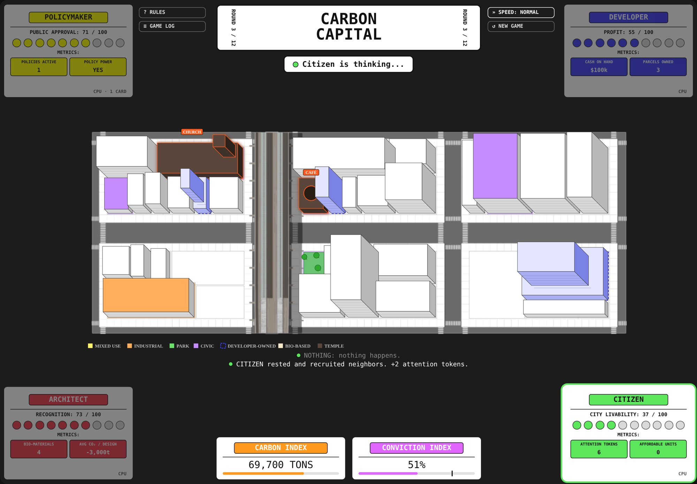

CARBON TEMPLES
- Semester
- ADV V "Scaling Up", Fall 2025
- Site
- 125th Street, East Harlem, NYC
- Partner
- Lorennah Granfors
- Instructor
- David Benjamin
A network of civic architectures that make carbon sequestration visible, participatory and desirable.
Cities sanctify consumption through storefronts, monuments and transit infrastructure. Carbon Temples asks why carbon cannot be sanctified the same way.
Today, sustainability falls on individual guilt: count your footprint, offset your latte. The real responsibility should sit with systems and corporations. What if architecture itself became a carbon bank? What if prestige shifted from money and glass facades to carbon hoards? Climate change is a failure of attention and desire as much as of systems. The project proposes a network of civic architectures that make sequestration visible, participatory and desirable across the 125th Street corridor.

Four sites of carbon conviction
A circular economy coffee shop, a church, a train station and the Museum of Carbon. Each one is a familiar institution re-coded as a space where sequestration is visible, participatory and collectively valued. Carbon becomes the program.



The Museum of Carbon
The Museum of Carbon is the culmination of a biomaterial research process that began with spent coffee grounds and straw waste. Carbon leaves a mark. The same waste that forms the structure also forms the brand and the accounting system: a space where carbon is stored, displayed, adopted and collectively valued. Architecture as an instrument for driving up carbon conviction.

Carbon Capital, the game
Can four players change a city's mind? Carbon Capital is a playable simulation of the same 125th Street blocks. A Policymaker, a Developer, an Architect and a Citizen each chase their own score (approval, profit, recognition, livability) while sharing two numbers: a carbon budget that runs out at 100,000 tons and a conviction index that fades every round.
Low-carbon moves unlock the four temples and, eventually, a Material Hub that grows the street's own building material. Win together by reaching 80% conviction with the Hub running, or let the budget run out. Play alone against three computer players or pass the screen between four people.
